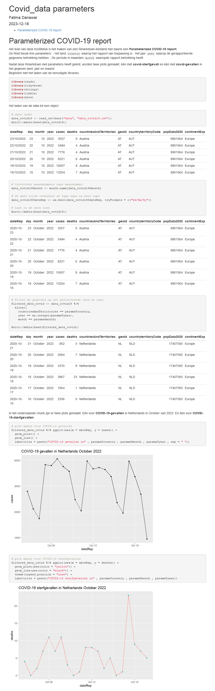
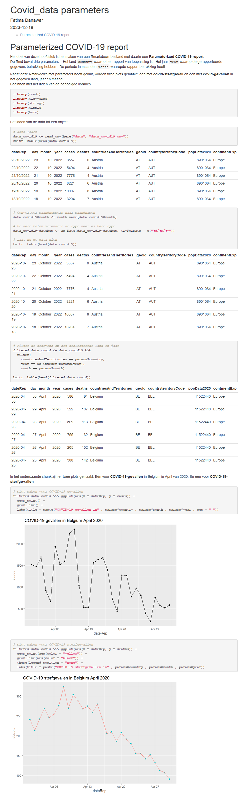

9 Parameterized COVID-19 report
Het doel van deze hoofdstuk is het maken van een Rmarkdown-bestand met daarin een Parameterized COVID-19 report.
De Rmd bevat drie parameters:
- Het land country waarop het rapport van toepassing is
- Het jaar year waarop de gerapporteerde gegevens betrekking hebben
- De periode in maanden month waaropde rapport betrekking heeft
Nadat deze Rmarkdown met parameters heeft geknit, worden twee plots gemaakt, één met covid-sterfgevall en één met covid-gevallen in het gegeven land, jaar en maand. De parameterized Rmarkdown is beschikbaar via github
met behulp van webshot heb ik een screenshot gemaakt van de geparametriseerde Rmarkdown HTML die ik heb gemaakt, dus het zou gemakkelijker zijn om een voorbeeld van deze oefening te bekijken op github-pagina’s.
Laten we zien in de parameterized Rmarkdown van de standaardinstelling is Nederland October 2022
# screenshot maken van html met behlup van functie webshot
webshot::webshot("document/params.html", "Images/params.png")
Params testing: Om parameters te testen gebruiken we de volgende functie en kunnen we daar welke parameters willen en selecteren.
#rmarkdown::render("document/params.Rmd", params = list(country = "Belgium", year = 2020, month = "April"), output_file = "belgium_2020_April")Hier kunnen we de resultaten van vorige stap zien als webshot

Nadat u de resultaten heeft gecontroleerd, kunt u zien dat de parameters werken en voor andere landen en data kunnen worden gebruikt.